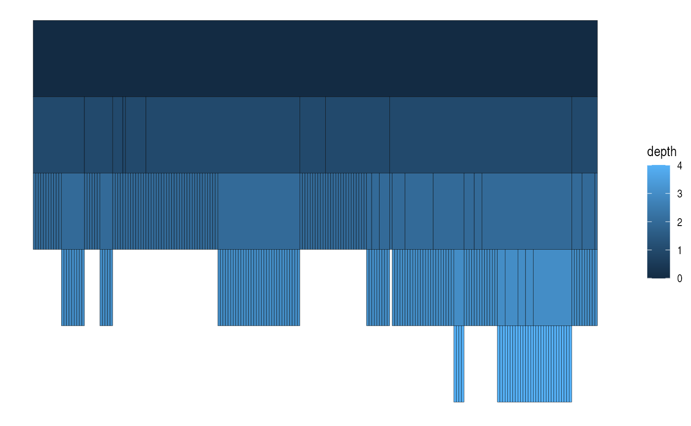
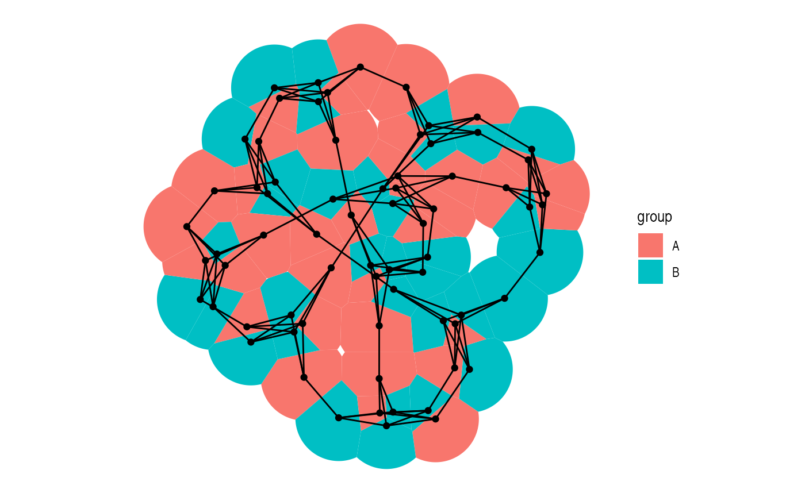
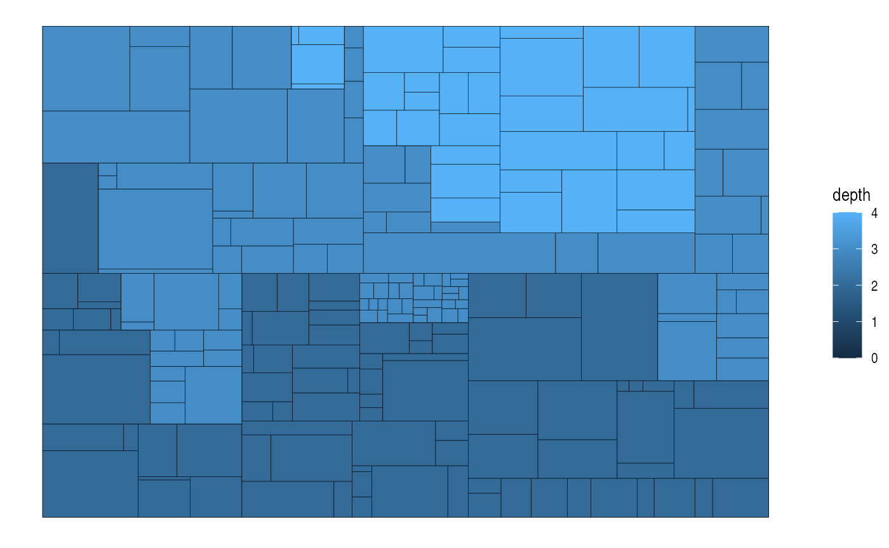
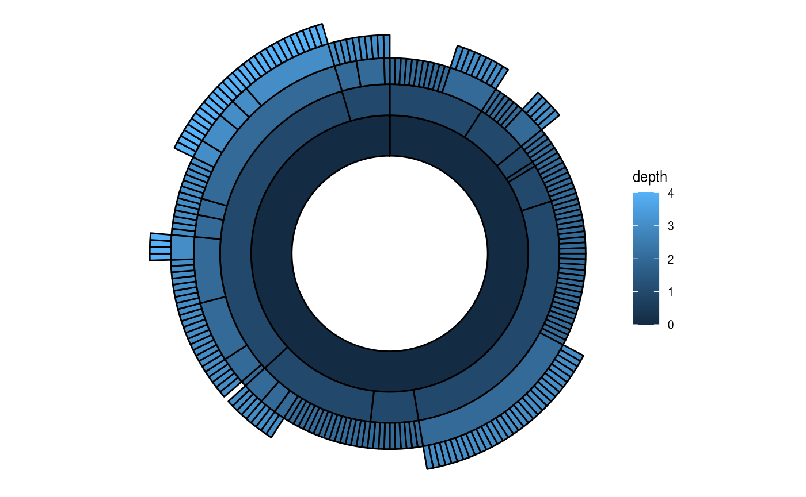

Nodes in a network are the entities that are connected. Sometimes these are also referred to as vertices, but ggraph has opted for this nomenclature and uses it consistently. While the nodes in a graph are the abstract concepts of entities, and the layout is their physical placement, the node geoms are the visual manifestation of the entities. Conceptually one can simply think of it in terms of a scatter plot — the layout provides the x and y coordinates, and these can be used to draw nodes in different ways in the plotting window. Actually, due to the design of ggraph the standard scatterplot-like geoms from ggplot2 can be used directly for plotting nodes:
library(ggraph) library(tidygraph) set_graph_style(plot_margin = margin(1,1,1,1)) gr <- as_tbl_graph(highschool) ggraph(gr, layout = 'kk') + geom_point(aes(x = x, y = y))

The reason this works is that, as discussed in the Layout vignette, layouts return a data.frame of node positions and metadata and this is used as the default plot data:
head(create_layout(gr, layout = 'kk'))
## x y name .ggraph.orig_index circular .ggraph.index
## 1 0.7326425 2.3767052 1 1 FALSE 1
## 2 0.7041666 2.9986454 2 2 FALSE 2
## 3 1.5125110 2.9624914 3 3 FALSE 3
## 4 -2.7467842 -1.0804763 4 4 FALSE 4
## 5 -2.8196405 0.2369667 5 5 FALSE 5
## 6 -2.6184244 2.1968979 6 6 FALSE 6
geom_node_*()
While usage of the default ggplot2 is absolutely allowed, ggraph comes with its own set of node geoms. Many of these are direct translations of ggplot2 own geoms like geom_point() so one could wonder why bother to use them.
The first reason is to provide clear code. It is not apparent anywhere that the standard geoms are addressing the nodes and using geom_node_*() makes it clear that this layer will draw nodes.
The second reason is that it will save typing. Since ggraph is in control of the shape of the input data through the layout calculations, it knows that x and y position is encoded in an x and y column. This means that geom_node_* can default the x and y aesthetics so there’s no need to type them:
ggraph(gr, layout = 'kk') + geom_node_point()

sometimes there is a need for addressing the x and y aesthetics, which is still possible, for instance if a partition layout should be inverted:
gr <- tbl_graph(flare$vertices, flare$edges) ggraph(gr, layout = 'partition') + geom_node_tile(aes(y = -y, fill = depth))

of course this could also be accomplished by reversing the y-axis using scale_y_reverse() so this is just to illustrate that the defaults are easily overwritten if needed.
The third reason is for the added functionality. All ggraph geoms get a filter aesthetic that allows you to quickly filter the input data. The use of this can be illustrated when plotting a tree:
ggraph(gr, layout = 'dendrogram', circular = TRUE) + geom_edge_diagonal() + geom_node_point(aes(filter = leaf)) + coord_fixed()

In the above plot only the terminal nodes are drawn by filtering on the logical leaf column provided by the dendrogram layout.
The different node geoms
The usual suspects are of course provided in the form of geom_node_point() (showcased above), geom_node_text(), and geom_node_label(). These work as expected, taking in the usual aesthetics (plus filter). Only x and y are defaulted so everything else must be provided e.g. label which does not default to the name column like is done in igraph. One feature sets geom_node_text() and geom_node_label() apart from their ggplot2 counterparts: both have a repel argument that, when set to TRUE, will use the repel functionality provided by the ggrepel package to avoid overlapping text. There is also geom_node_voronoi() that plots nodes as cells from a voronoi tesselation. This is useful for e.g. showing dominance of certain node types in an area as overlapping is avoided:
graph <- create_notable('meredith') %>% mutate(group = sample(c('A', 'B'), n(), TRUE)) ggraph(graph, 'stress') + geom_node_voronoi(aes(fill = group), max.radius = 1) + geom_node_point() + geom_edge_link() + coord_fixed()

Apart from these geoms there’s a set of geoms mainly useful for spatial node layouts such as treemaps, partition, circle packing, and fabric. geom_node_tile() and geom_node_range() are the ggraph counterpart to ggplot2s geom_tile() and geom_linerange() while geom_node_circle() and geom_node_arc_bar() maps to ggforces geom_circle() and geom_arc_bar(). Collective for these is that the spatial dimensions of the geoms (e.g. radius, width, and height) are precalculated by their intended layouts and defaulted by the geoms:
ggraph(gr, layout = 'treemap', weight = size) + geom_node_tile(aes(fill = depth))

All spatial node geoms will be center-based, meaning that the x and y value of the layout will refer to the center of the layout and not e.g. the bottom-left corner. This makes it easier to add labels to spatial layouts as well as using spatial layouts in a non-spatial way:
l <- ggraph(gr, layout = 'partition', circular = TRUE) l + geom_node_arc_bar(aes(fill = depth)) + coord_fixed()

l + geom_edge_diagonal() + geom_node_point(aes(colour = depth)) + coord_fixed()

More node geoms are sure to appear in ggraph with time but they will generally be quite easily comprehensible due to their strong resemblance to the standard ggplot2 geoms. After all it is just points on a plane…